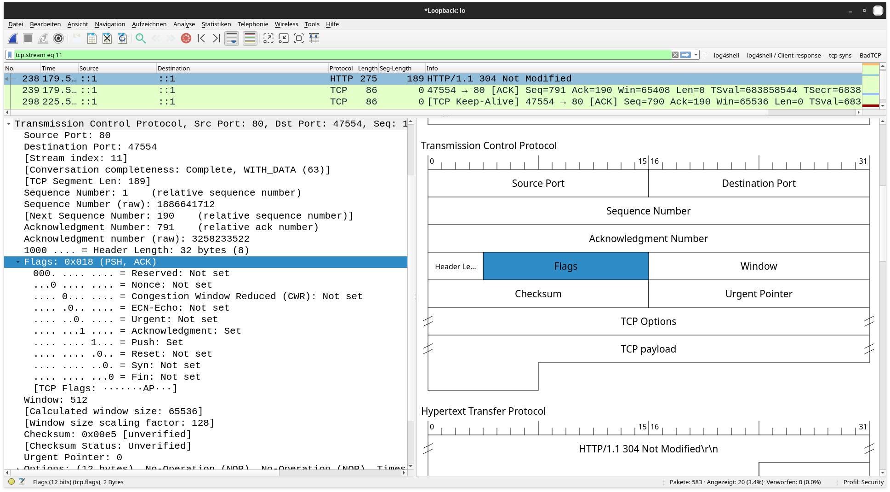

Untertitel
UDP ist ein Layer-4-Protokoll, d. h. es arbeitet auf der Transportschicht. Bei UDP werden in jedem Frame Daten transportiert. Der UDP-Header ist lediglich 8-Bytes lang und enthält die folgenden Informationen:
1 Quellport: Welcher Port wurde vom Sender benutzt 2 Zielport: An welchem Port soll der Frame den Empfänger erreichen. 3 Länge: Wie viele Bytes ist das UDP-Paket inklusive UPD-Header (aber ohne die Headerdaten der unteren Layer) lang. 4 Prüfsumme: Dient der Überprüfung der Datenintegrität.
Vorteile:
Nachteile:
Abbildung 1: UDP-Frame
TCP ist ebenfalls ein Layer-4-Protokoll. Es zeichnet sich aber dadurch aus, dass es Mechanismen zur Verfügung stellt, die sicherstellen, dass:
Allerdings sind dazu eine Vielzahl zusätzlicher Pakete notwendig, die diese Protokoll relativ langsam machen und zu einem großer Overhead führen:
Zu Beginn jeder TCP-Verbindung wird 3-fach Handschlag (three way handshake) ausgetauscht, dies geschieht über die Flags, das sind 8 Bits, die den Status der Verbindung anzeigen:
Das erste Paket ist die Anfrage eine Verbindung aufzubauen. Das 2. Bit ist gesetzt. Um diese Verbindung zu identifizieren und die Reihenfolge der Pakete festzulegen, sendet er eine zufällig (große) Zahl an Sequenznummer im Header.
Nimmt der Empfänger des SYN-Pakets die Verbindung an, sendet er ein SYN-ACK-Packet zurück. Das 2. und 5. Bit sind gesetzt.
Er addiert zu Sequenznummer des Senders 1 hinzu und sendet diese Zahl im Header als Acknowledgementnummer.
Nun bildet er ein eigene zufällige Sequenznummer.
Der 1. Sender bestätigt nun den Empfang des SYN-ACK-Pakets mit dem ACK-Paket: Nur noch das 5. Bit ist gesetzt.
Er addiert zu Sequenznummer des Empfängers 1 hinzu und sendet diese Zahl im Header als Acknowledgementnummer.
Die Acknowledgementnummer des Empfängers benutzt er nun selbst wieder als Sequenznummer. Dieser Austausch von Sequenz- und Acknowledgementnummer wiederholt sich bei jedem weiteren Paket, sodass dieses:
der Verlust eines Pakets sofort erkannt wird.
Die meisten Anwendungsprotokolle, wie HTTP(S), FTP, SSH, oder IMAP bauen auf TCP auf. Nach dem der Handshake abgeschlossen ist, können endlich Daten übertragen werden. Pakete die Daten enthalten setzen das ACK-bit (5.) und das PUSH-Bit (4.).

Werden längere Zeit (Millisekunden) keine Daten gesendet, wird ein Keep-Alive-Paket gesendet, dass eigentlich ein eingeschobenes ACK-Paket ist (5. Bit gesetzt). Und keine Daten enthält. Es stellt sicher, dass die Verbindung weiter besteht.
Hat der Sender alle Daten gesendet, sendet er Paket bei dem das FIN-Bit (1.) und das ACK-Bit (5.) gesetzt sind. Der Empfänger sendet ein FIN-ACK-Paket, wenn er alle Daten empfangen hat.
Eine Seite kann die Verbindung auch einseitig beenden, wenn z. B. das Browserfenster einer HTTP-Seite geschlossen wird. Um dies anzuzeigen wird ein Paket gesendet bei das Reset-Bit (3.) gesetzt ist.
Der TCP-Header ist mindestens 20 Byte groß. Der Header der SYN- und SYN-ACK-Pakete enthalten jedoch in der Regel zusätzliche Optionen, die bestimmen, wie Daten zwischen beiden Seiten ausgetauscht werden, z. B. wie viele Daten am Stück gesendet werden dürfen. Dadurch wird der TCP-Header bis zu 60 Bytes groß werden kann.
2021 wurde ein neues Protokoll veröffentlicht, dass selbst UDP nutzt, aber TCP ablösen soll. Es soll sozusagen die Schnelligkeit von UDP und die Zuverlässigkeit von TCP kombinieren. QUIC-Pakete sind zudem grundsätzlich verschlüsselt. QUIC wird bisher von HTTP/3 und DNS over QUIC (DoQ) als Anwendungsprotokollen verwendet und vor allem von großen Tech-Firmen wie Alpha (Google, Youtube, etc.)und Meta (Facebook, Instagram, etc.) genutzt.